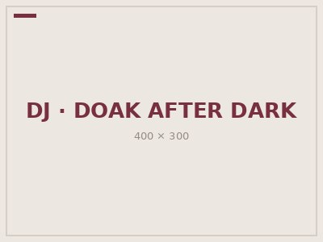
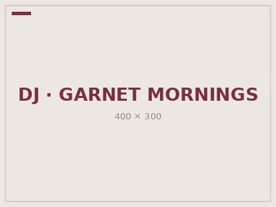
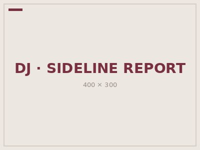
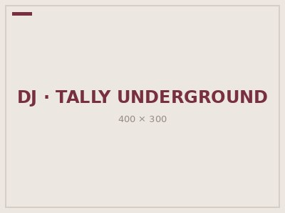

Weekly Schedule
| Sunday | Monday | Tuesday | Wednesday | Thursday | Friday | Saturday | |
|---|---|---|---|---|---|---|---|
| 1 | Morning Talk Show | Classical Hit Pieces | Classical Hit Pieces | TLH: Local Music | |||
| 2 | |||||||
| 3 | Afternoon Talk Show | Afternoon Talk Show | Afternoon Talk Show | Popular Electro-Swing | |||
| 4 | Favorite Country Music | 80s Rock Hit Pieces | 90s Rock Hit Pieces | 2000s Pop Hit Pieces | Up and Coming FSU Student Music | Friday Evening Jazz | Saturday Swing |
| 5 | TLH Classical Composers | Evening Talk Show | Evening Talk Show | Evening Talk Show | Evening Talk Show | Evening Talk Show |
Profiles
DJ, Genre, and Air Time:

Published on
Air Time
GenreDescription
DJ, Genre, and Air Time:

Published on
Air Time
GenreDescription
DJ, Genre, and Air Time:

Published on
Air Time
GenreDescription
DJ, Genre, and Air Time:

Published on
Air Time
GenreDescription
- Legal ID:
- Legal ID definition
- Drive Time:
- Drive time definition
- PSA:
- Public Service Announcement
- Underwriting:
- Underwriting definition